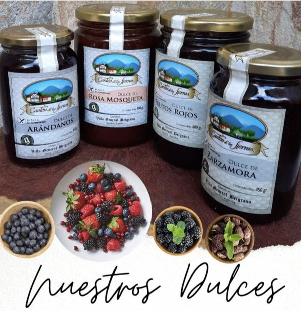
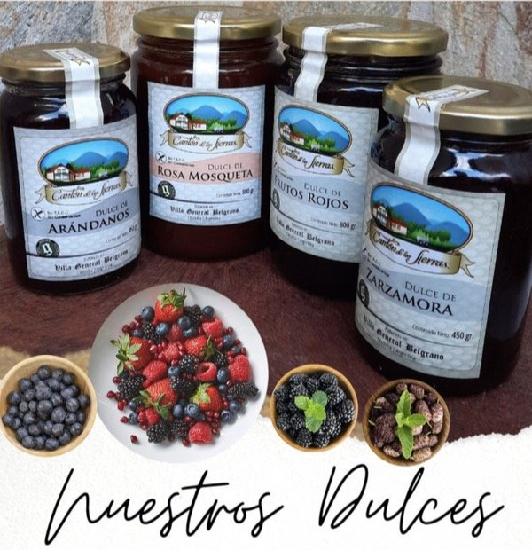

Cosecha manual, calidad inigualable
La elaboración de nuestro azafrán es un proceso delicado que combina la tradición con un profundo respeto por la naturaleza. El 'oro rojo' requiere una labor artesanal intensa, desde la siembra de los bulbos hasta la cosecha de cada flor.

Siembra y cultivo: Adaptamos el cultivo a las condiciones agroecológicas de Córdoba, aprovechando el clima ideal para el desarrollo de nuestros bulbos.

Una vez firme, la cuajada se corta en pequeños granos y se remueve con paciencia para separar el suero. Luego se moldea y se prensa, dando forma al queso mientras se eliminan los restos de líquido.

Después de un breve reposo, se sala (a mano o por inmersión) para realzar el sabor y conservar el producto. Finalmente, los quesos se dejan madurar en ambientes controlados, donde desarrollan su textura, aroma y sabor únicos.
Cada etapa se realiza con dedicación, respetando los tiempos naturales y manteniendo viva la tradición quesera artesanal.


 
